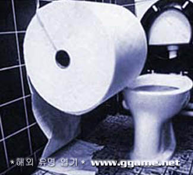

[한 장의 휴지면 충분하다]
'화장실 개그' 라는 말이 있다.
웃기지만 공공연히 드러내기 어려워서 친분이 있는 모임에서나 보여줄 수 있는 개그를 칭하는 말이다.
이런 개그를 들으려면 TV 나 라디오를 틀어선 불가능하다.
'다른 사람들은 어떨까?' 라는 생각이 들어도 선뜻 물어보지 못하는 것들이 있다.
심지어는 '다른 사람들도 똑같다' 라는 착각을 하고 있어서 물어보지도 않는 것들도 있다.
막상 듣고보면 이해는 되지만 듣기 전까지는 상상도 하지 못하는 사실들도 존재한다.
이런 것들을 물어보고 파헤치기 위해 이 카테고리를 마련했다.
'남자도 좌변기에 앉아서 오줌을 눌 수 있어요?'
필자가 대학교 OT에서 변기가 고장나서 앉아서 소변을 볼 수 밖에 없었던 일화를 들려주던 중에 신입생 여학우에게 받은 질문이다.
이 여학우에게 남자가 좌변기에서 소변을 볼 수 있다는 사실을 알려주는 것은 그리 어렵지 않았다.
하지만 내가 말해주지 않았다면 그녀는 절대로 혼자서 그 사실을 생각해내지 '않았을' 것이다. (생각해보면 알 수 있을지도 모른다)
(필자의 대답은 '때때로 불가능할 수도 있지만 대체로 가능하다. 대변을 보다가 소변이 마려워서 일어서진 않는다' 였다.)
'사람들은 보통 대변을 닦기 위해서 몇장의 휴지를 뜯어서 몇번씩 닦나요?'
필자는 6~8장의 휴지를 뜯어서 6~8회 정도 닦는다.
그냥 그 정도의 장수가 적당하다고 생각해서다. 더 많으면 닦이는 느낌이 안나고 더 적으면 위험하다..
당신은 어떤가? 가장 가까운 사람의 화장지 사용법을 아는가?
'여자들도 모이면 학우나 동료 남자들의 얼굴이나 몸매에 대해서 얘기하나요?'
필자가 들은바로는 '남자들보다 더하면 더했지 덜하지는 않는다' 였다.
하지만 이 대답을 해준 여성분도 남자들이 얼마나 여자들의 몸매 얘기를 자주 하는지는 알지 못하는듯 했다.
'저는 하루 종일 섹스 생각이 나요. 길거리에 여자만 봐도 그렇고 혼자 있을때도 계속 그 생각이 나요.'
어느 여성지에 실린 설문조사 결과를 보니 (믿을만하지 못하다는 뜻이기도 하다) 20대 남성의 85% 는 매 시간마다 1회 이상 섹스 생각을 한다고 한다.
이제 고민이 사라졌나? ... 라고 여성지는 되물었다. '왜 여성지에서 남성의 고민상담을 해주는걸까?' 라는 질문은 차치하고라도
이런 화장실 설문은 분명히 유익하다. 아니 적어도 해롭지는 않다.
이 카테고리는 '화장실 설문조사' 다.
필자가 모은 여러가지 화장실 설문들을 올릴 것이다.
여러분은 그 설문에 기명/무기명으로 답변해주면 된다. 무기명을 권장한다.
절대로 부끄러워서 무기명이 아니다. 설문의 성격상 신빙성을 높이기 위해 무기명을 권장한다.
여러분에게도 궁금한것이 생길지 모른다.
어느 게시물의 리플이라도 적어주기 바란다. 아니면 방명록도 좋다.
필자는 모든 리플과 방명록을 확인하고 있으므로 잘 추려서 설문에 올리도록 하겠다.
첫 번째 설문은 위에서도 언급되었던 '휴지 사용법' 이다.
첫 번째 설문. 여러분은 대변을 보고난 후에 휴지를 몇장씩 몇번이나 사용해서 변을 닦는가?
비데를 사용하는 분이라면 비데가 없는 화장실을 사용하는 경우를 답변해주면 되겠다.
화장실 설문은 계속된다.